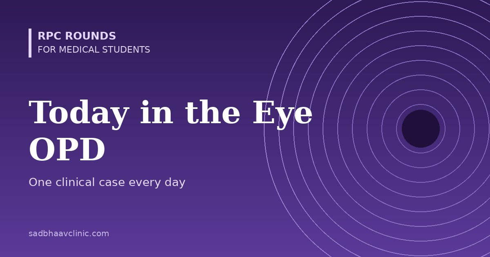

For: MBBS students
Last updated: November 2026
One short clinical case every day, the kind you meet in the eye OPD. Read the story, answer the questions, then open the linked page to learn more. A new case appears each day; you can also browse earlier ones.
More practice: RPC Rounds for Medical Students, Spot the Diagnosis, Viva Hot Seat.
📘 Want more exam-ready material? See Most Commons in Ophthalmology on Kindle, or browse all my books.
How to cite this page
Patel D. Today in the Eye OPD: A Daily Clinical Case with Questions for Students and Residents. RPC Rounds (Sadbhaav Eye Clinic). Updated November 2026. Available at: https://www.sadbhaavclinic.com/today-in-the-eye-opd-daily-case.html. Accessed [date].
Looking for an eye specialist in Ahmedabad? Eye Department at Sadbhaav or book a consultation with Dr. Dhaval Patel.